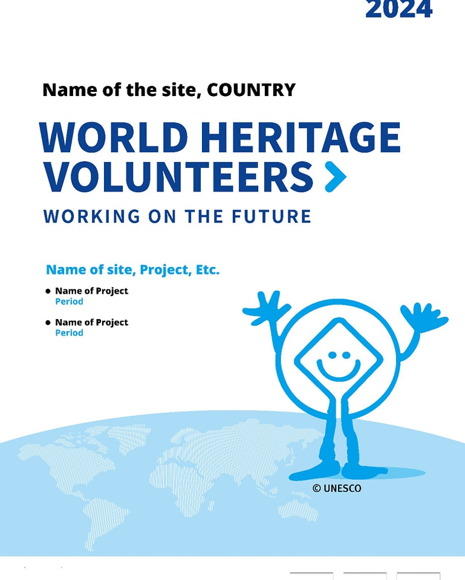
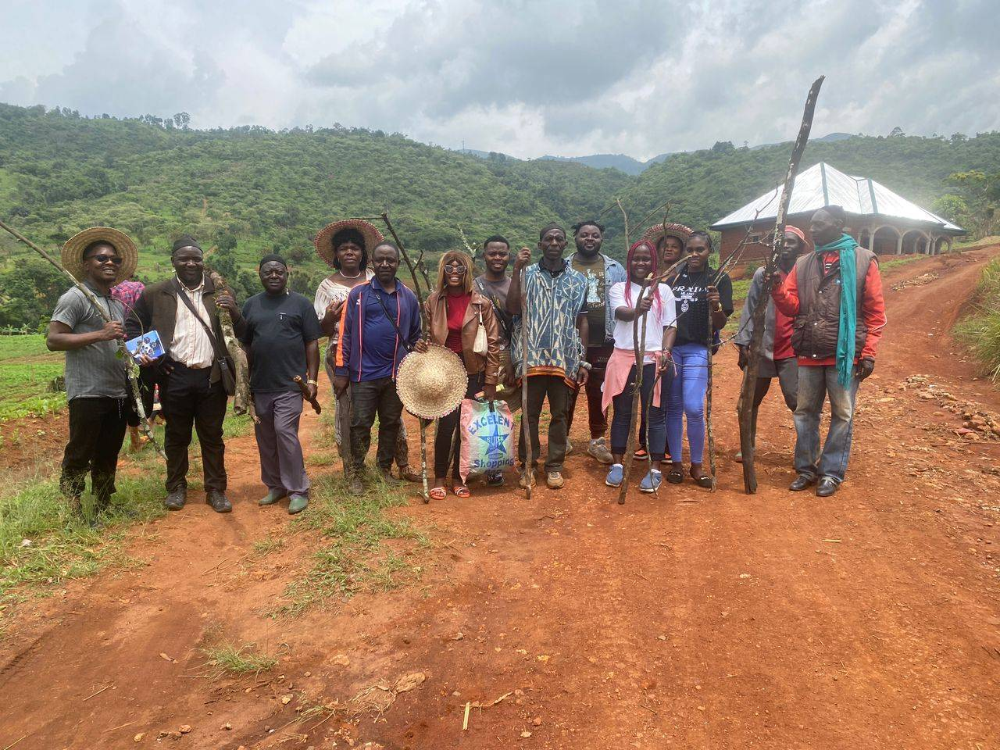
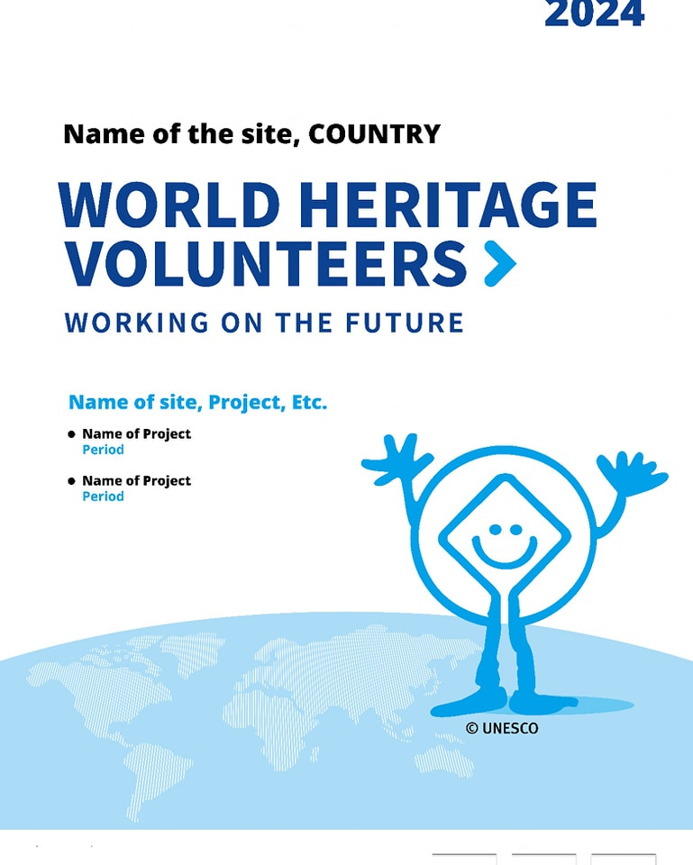
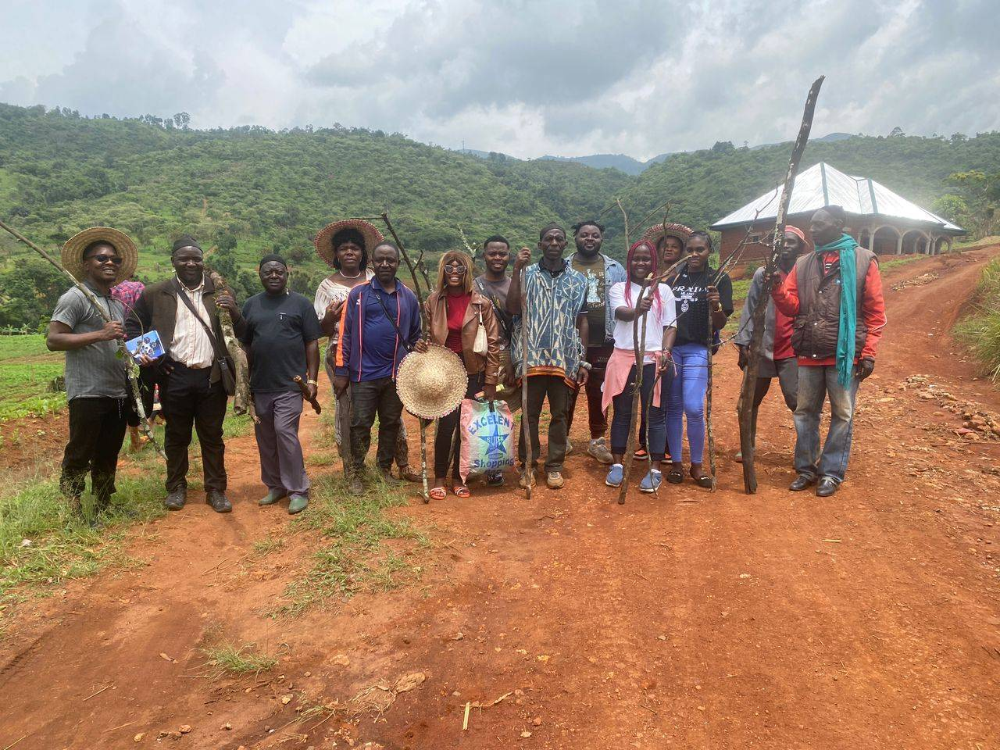

{kind=link}
Childen's Holiday Bootcamp
The Bootcamp sought to foster creativity through Arts & Crafts, Painting, and Drawing. Build digital skills through Computer Programming and Web Development...
The Bootcamp sought to: Foster creativity through Arts & Crafts,
Painting, and Drawing. Build digital skills through Computer
Programming and Web Development. Develop musical talent and
appreciation through Music Training. Provide a safe platform for
teamwork, confidence-building, and innovation. ---
Activities and Skills Acquired Participants took part in engaging,
hands-on workshops across five main areas:
1. Arts & Crafts 🖍️ Created decorative and practical items from
simple materials. Acquired design thinking, creativity, and
problem-solving skills.
2. Painting & Drawing 🎨 Practiced sketching, coloring, and
shading. Improved artistic expression, focus, and patience.
3. Computer Programming 💻 Learned basic coding concepts.
Developed logical thinking and digital literacy.
4. Web Development 🌐 Built simple web pages. Acquired digital
creativity and content creation skills.
5. Music Training 🎶 Introduced to basic music theory, rhythm, and
vocal training. Learned team performance, listening skills, and
self-expression through music.
In addition, participants strengthened soft skills such as:
Teamwork and collaboration Public speaking and presentation skills
Confidence and self-discipline ---
Participation The Bootcamp brought together 50 children and teens,
who participated enthusiastically and produced impressive results
across the various training sessions. ---
Closing Ceremony The Bootcamp concluded with a memorable closing
ceremony that brought together parents, facilitators, and
stakeholders. Key highlights included: Certificates of
Participation awarded to all 50 children. Exhibitions of artworks,
tech projects, and musical presentations by participants. Words of
encouragement from facilitators and partners
{kind=link}
I.V.Y Africa - MadEx Workshop (MADAGASCA)
MadEx workshop in Antananarivo, Madagascar, hosted by the Malagasy National Commission for UNESCO (COMMAT). This transformative event brought together youth leaders and organizations from across Africa and beyond—including delegates from China...
Had the incredible opportunity to participate in the I.V.Y. Africa
- MadEx workshop in Antananarivo, Madagascar, hosted by the
Malagasy National Commission for UNESCO (COMMAT). This
transformative event brought together youth leaders and
organizations from across Africa and beyond—including delegates
from China, Thailand, Germany, and Romania—to tackle heritage
preservation and climate action through volunteering.
🌱 Key Takeaways:
Explored the intersection of climate change and heritage
conservation, learning how to design impactful volunteer projects.
Engaged in participatory action research at the stunning Royal
Hill of Ambohimanga, a UNESCO World Heritage site, discussing
challenges with local communities and authorities. Gained tools
for strategic planning, fundraising, and advocacy to amplify
youth-led initiatives.
🤝 Unforgettable Networking:
Connected with inspiring changemakers from 15+ African countries
and beyond, including China, Thailand, Germany, and Romania,
sharing experiences and co-creating a Road Map for regional and
global youth exchanges. The energy and ideas exchanged were truly
empowering!
🙏 Special Thanks:
UNESCO Madagascar for their warm hospitality and dedication. Ines
Yousfi (UNESCO) and Mr. Francesco (Better World) for their
visionary leadership and support in making this event a success.
This workshop was just the beginning! Let’s continue to drive
change, protect our heritage, and take bold climate
action—together.
{kind=link}
MASTER CLASS TO MARK END OF WORLD HERITAGE DAY
Master Conference to mark the end of activities in the celebration of the world heritage day/ international day of sites and Monuments. Amazing experience from a cream of expert cultural stakeholders on topics such as...
Master Conference to mark the end of activities in the celebration of the world heritage day/ international day of sites and Monuments. Amazing experience from a cream of expert cultural stakeholders on topics such as; heritage conservation, protecting heritage in crisis zone, the effects of climate change on heritage and heritage sites and from our Director Tamfu Kilem the UNESCO heritage list and sites in Cameroon. This conference engaged stakeholders and students from the University of BAMENDA
{kind=link}
Advocacy Training Session
The reading culture continues to dwindle due to rapid advancement of other technologies. More and more young people find reading as a requirement for passing and there after obsolete...
he reading culture continues to dwindle due to rapid advancement of other technologies. More and more young people find reading as a requirement for passing and there after obsolete. Libraries are fast becoming heritage sites that need to be visited for touristic proposing. Quoting Mr Ngam, English teacher at Progressive Comprehensive College, Bamenda "the reading culture is dead and we are looking for a befitting burial site for the burial" A consortiumm; Direct Action for Rights Equity and Development, #regionaldelegationofartsandculture #Franco #Alliance yesterday the 24th April organized a roundtable conference aimed at inspiring students to keep up the reading culture. From a diverse panel, students were given some key advantages of reading as; its a means of relaxation, builds self confidence, teaches you of different cultures, builds your language power, increases your analytical and logical reasoning amongst other things. This even was attended by young writers, students and Liberians from within Bamenda. Also, as part of commemorative activities, our director Tamfu Kilem along side the Service Head for Books and Reading at the Regional Delegation of Arts and Culture North West Region Madam Maurine Munoh visited the Bamenda Regional Library to access the state of the library.
{kind=link}
YOUTH EMPOWERMENT WORKSHOP
As part of activities to engage children in holidays activities and also allow them gather skills. Skill development is an integral skill in building a more resilient future. One of the most sustainable ways of building local economies is engaging young people...
As part of activities to engage children in holidays activities and also allow them gather skills. Skill development is an integral skill in building a more resilient future. One of the most sustainable ways of building local economies is engaging young people to learning skills in local arts and craft. Through this training, arts is being used as a tool to engaging young people and children in progressive activities, promoting cohesion and participation. Direct Action for Rights Equity and Development in partnership with the Regional Delegation of Arts and Culture North West Region is organizing a one month training for children in music, dance, embroidery, painting and computer programming. Engaging over 50 children in Bamenda I sub division
{kind=link}
FILM FOR ADVOCACY WORKSHOP
Great experience being part of the Film for Advocacy workshop organized by Noble Arts Entertainment Company - NAEC in partnership with Israel Scott family creatives at the U.S. Embassy Yaounde that saw young and aspiring film makers from all over Cameroon gain skills on film making in general and film making for Advocacy in particular from the 2nd to the 12 of April, 2024....
Great experience being part of the Film for Advocacy workshop organized by Noble Arts Entertainment Company - NAEC in partnership with Israel Scott family creatives at the U.S. Embassy Yaounde that saw young and aspiring film makers from all over Cameroon gain skills on film making in general and film making for Advocacy in particular from the 2nd to the 12 of April, 2024. This workshop was made possible through the Mandela Washington Fellowship Reciprocal Exchange Program of the United States department of State funded by the US Government and administered by IREX We were drilled in interactive sessions by seasoned specialist and veterans in the field of film making such as Dr Peter Fada, a seasoned Producer, director of the Lahira Tv from the #UK Dr Victor Okhai; Producer, Director, consultant and one of the founding members of the Director's Guild #Nigeria Mr Isreal Scott, Producer, Actor and Acting Coach from the #USA Mr Mekemndi Randy Award winning Filmmaker, host and Mme Rose Mbolle Epie; Veteran journalist and Tv host. It was a great avenue for learning through hands-on-activities training workshop and also created a platform for networking amongst young creative filmmakers in #Cameroon as participants were divided into groups and coached in producing short advocacy films on diverse topics that reflect our local communities.
{kind=link}
WORLD THEATRE DAY
As parts of activities to celebrate the #WorldTheatreDay2024 Direct Action for Rights Equity and Development in partnership with the Regional Delegation of Arts and Culture Northwest, Noble Arts Entertainment to Organize an event that brought together youths, young and aspiring actors from the Region to celebrate on the theme "The Artist and Cultural Structurisation Movement of Cameroon and Peace Consolidation; the Opportunity and Challenges of the Theatre Arts"...
As parts of activities to celebrate the #WorldTheatreDay2024 Direct Action for Rights Equity and Development in partnership with the Regional Delegation of Arts and Culture Northwest, Noble Arts Entertainment to Organize an event that brought together youths, young and aspiring actors from the Region to celebrate on the theme "The Artist and Cultural Structurisation Movement of Cameroon and Peace Consolidation; the Opportunity and Challenges of the Theatre Arts" Understanding that theatre is the culture of peace and theatre is the mirror to our society, stakeholders and veterans in the field encouraged young artist not to waiver in their determination. We also outline the challenges and opportunity that exist within the sector. The event ended with performances from local theatre troupes in attendance .
{kind=link}
ENGAGING LOCAL CRAFTSMEN
Engaging craft men and women in the Northwest Region as a tool for capacity building through roundtable discussions to identify key areas for intervention and support to creative and Cultural sectors. As a means to supporting import substitution...
Engaging craft men and women in the Northwest Region as a tool for capacity building through roundtable discussions to identify key areas for intervention and support to creative and Cultural sectors. As a means to supporting import substitution as part of government efforts to build local economies, engaging SMEs CIGs and cooperative societies to partner, network and collaborate in building lasting partnership that can help build the sector, increase ROI and local development.